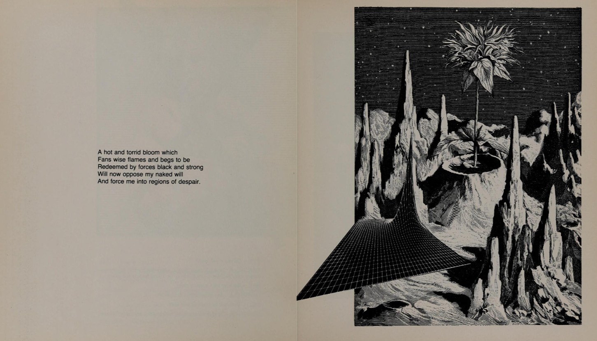
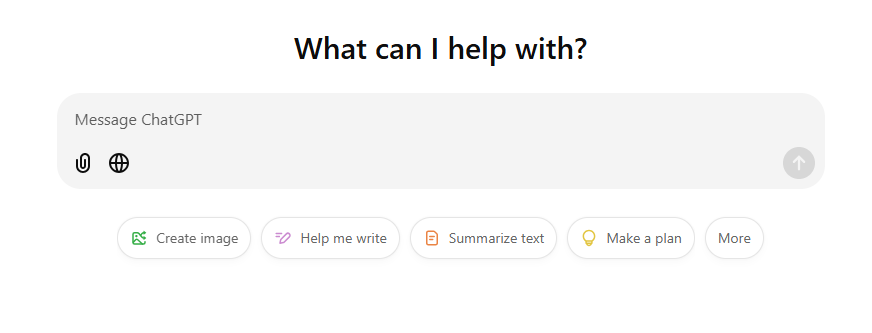
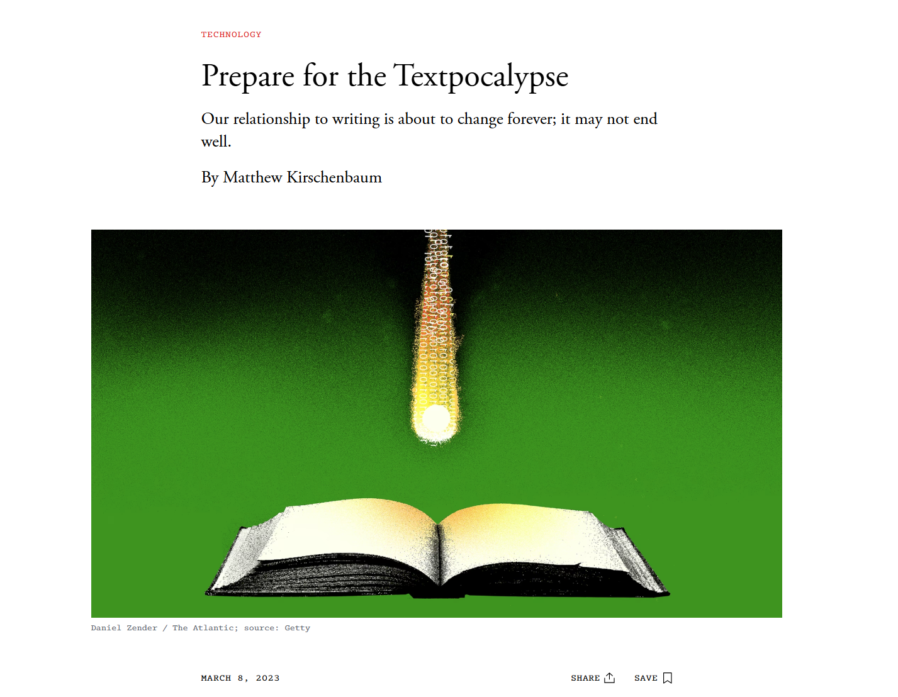
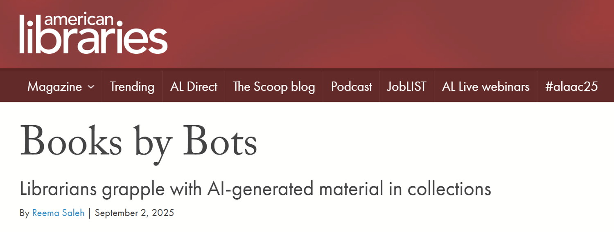
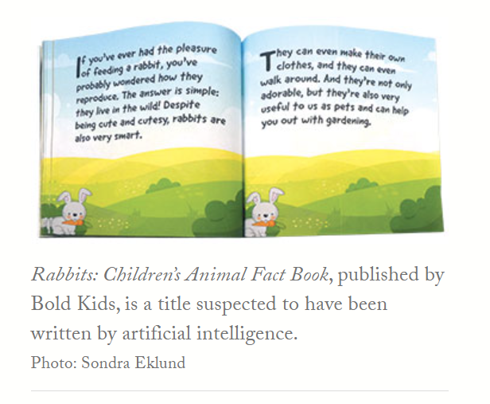
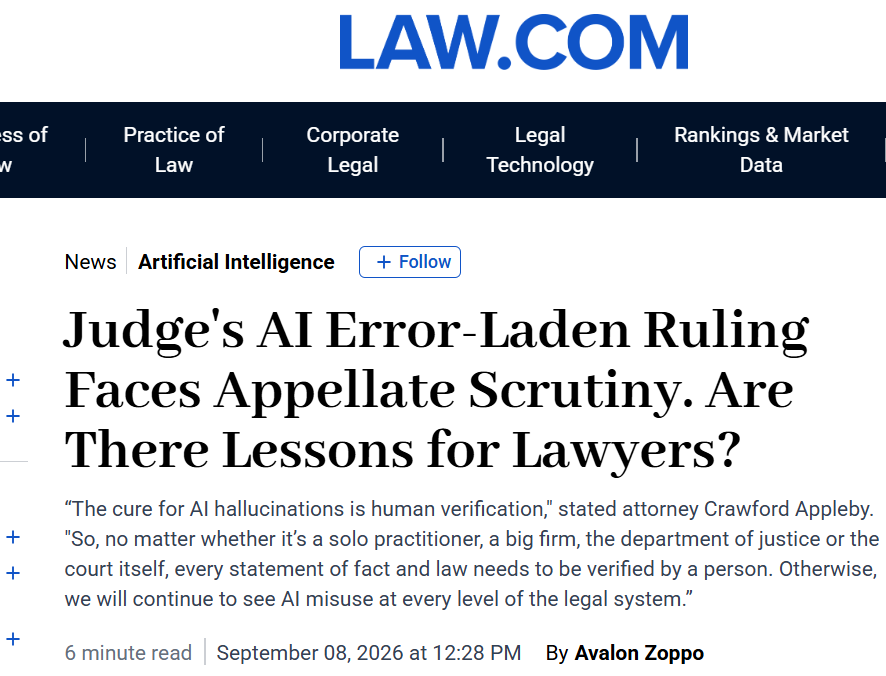
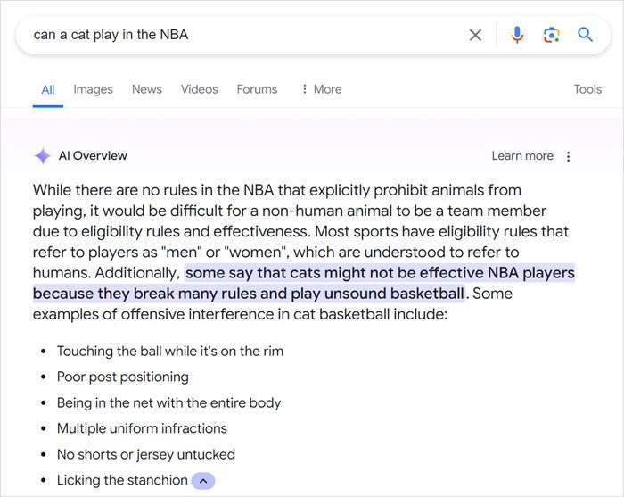
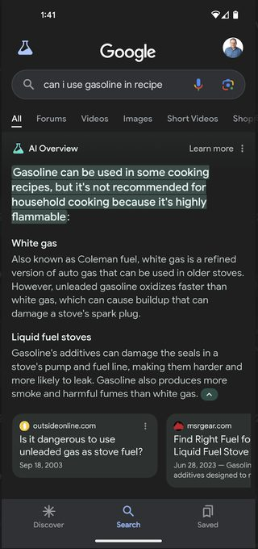
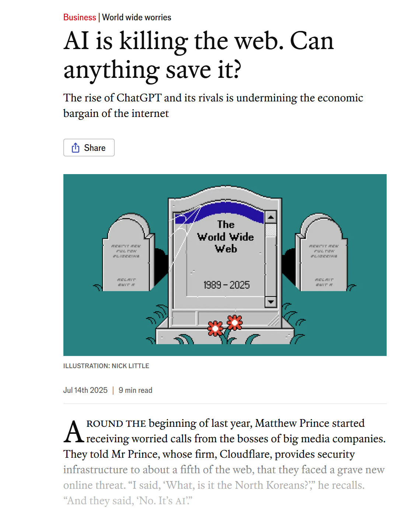

Module Two
> ENG 3861 // JAN 25 – FEB 7, 2027_

Machine-generated poetry, 1984: generated text has a long history

The blank box: where most people meet text generation today
Ted Chiang on compression
Think of ChatGPT as a blurry JPEG of all the text on the Web. It retains much of the information on the Web, in the same way that a JPEG retains much of the information of a higher-resolution image, but, if you’re looking for an exact sequence of bits, you won’t find it; all you will ever get is an approximation.
What led to problems was the fact that the photocopier was producing numbers that were readable but incorrect; it made the copies seem accurate when they weren’t.
These hallucinations are compression artifacts, but—like the incorrect labels generated by the Xerox photocopier—they are plausible enough that identifying them requires comparing them against the originals, which in this case means either the Web or our own knowledge of the world.
The fact that ChatGPT rephrases material from the Web instead of quoting it word for word makes it seem like a student expressing ideas in her own words, rather than simply regurgitating what she’s read; it creates the illusion that ChatGPT understands the material.
Matthew Kirschenbaum on a web full of machine text

We may quickly find ourselves facing a textpocalypse, where machine-written language becomes the norm and human-written prose the exception.
The tech-news site CNET has published dozens of stories written with the assistance of AI in hopes of attracting traffic, more than half of which were at one point found to contain errors.
Think of it as an ongoing planetary spam event, but unlike spam—for which we have more or less effective safeguards—there may prove to be no reliable way of flagging and filtering the next generation of machine-made text. “Don’t believe everything you read” may become “Don’t believe anything you read” when it’s online.
the textpocalypse in the news

When AI-written books land in the library catalog

A children's fact book suspected of being AI-generated, from the same article

Hallucinated citations reach the courtroom source

AI search answers the question you asked, whether or not it makes sense

Check the source: a confident answer, compressed from the wrong context

If chatbots answer everything, who keeps writing the originals? source
But we aren’t losing our access to the Internet. So just how much use is a blurry JPEG, when you still have the original?
watch the video, then do the exercise and post by Thursday
steps 2 and 4
> Write a 300-word overview of [your topic] for a college student. Then list five scholarly sources (books or journal articles) I could read to learn more, with full citations.Where was the chatbot “blurriest,” in Chiang's sense? Did search fix it, or just change it?
Post: 2 screenshots + a results table (3 pts), a 250+ word reflection (4), one citation (1), two replies (2).